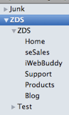
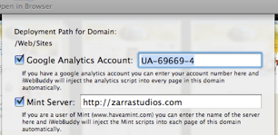
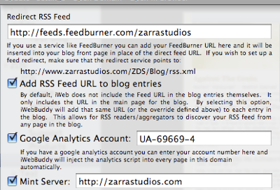

iWeb Buddy
iWeb Buddy is an extension to Apple’s popular iWeb application. Where iWeb leaves off, iWeb Buddy starts. All this for only $25.00!


iWeb offers the ability to add as many sites as you want but it does not offer a way to separate these sites into their own files. Therefore if you have one site you wish to publish to .mac and another you want to host on your own server you are limited to publishing both to .mac and then moving one of them back. However, iWeb Buddy allows you to have as many iWeb files as you want. You can now organize your websites any way that you wish!

For each Domain referenced in iWeb Buddy you can configure it to use Google Analytics and/or Mint. Configuring these services in iWeb Buddy will automatically inject the proper HTML code into each page in that Domain to allow it to be tracked.
Want to use another tracking service? iWeb Buddy lets you set up any custom scripting to be injected into the <head> portion of each page.

iWeb only puts the RSS feed links on the top page of each blog and/or podcast. Unfortunately this makes it very hard for your site visitors to find the feed and add it to their feed tracker. In addition, these rss feeds do not have any statistical tracking attached to them.
iWeb Buddy solves both of these issues. First, iWeb Buddy will go into each entry of the blog and/or podcast and add the appropriate rss feed links so that no matter where in your blog your readers are they can link to your feed.
iWeb Buddy will also redirect these links to your preferred feed tracking site like Feed Burner. This will allow you to follow all of the traffic that your blog or podcast is generating.

Want people to be able to link your blog posts or podcasts to Digg? Perhaps you want people to easily link back to your site from Google or del.icio.us?
iWeb Buddy makes this easy. By selecting the desired Social Bookmarking site in the blog preferences, iWeb Buddy will automatically add these links to each blog entry.
Built for iWeb 2008 and Leopard
iWeb Buddy is designed specifically to work with Apple’s latest release of iLife and OS X.
Using the latest technologies available in Apple’s OS X 10.5 Leopard and the latest features added to iLife 2008, you can build stunning webpages without having to learn any HTML code.
With iWeb Buddy you can enhance those pages to get the functionally previously reserved for those who write and design HTML pages by hand.
NOTE: All Amazon referral fees are donated to Child’s Play.
Universal Binary
Whether you are running on an Intel Macintosh or a PPC Macintosh, iWeb Buddy will run flawlessly. iWeb Buddy does require Leopard to take advantage of some of its advanced features. So if you are running Leopard, you can use iWeb Buddy today!


©2007-2008 Zarra Studios LLC. All rights reserved.